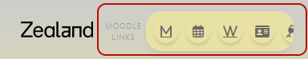

Aflevering med Wiseflow
Du skal logge ind med NemID for at aflevere din opgave på Wiseflow. Klik på i navigationsmenuen for at få adgang til Wiseflow. Husk altid at aflevere i god tid, og kontroller, at dine links fungerer både før og efter aflevering!
